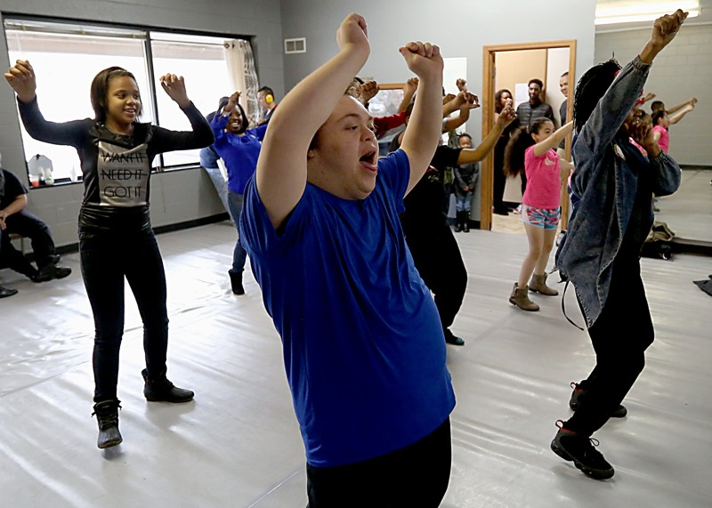
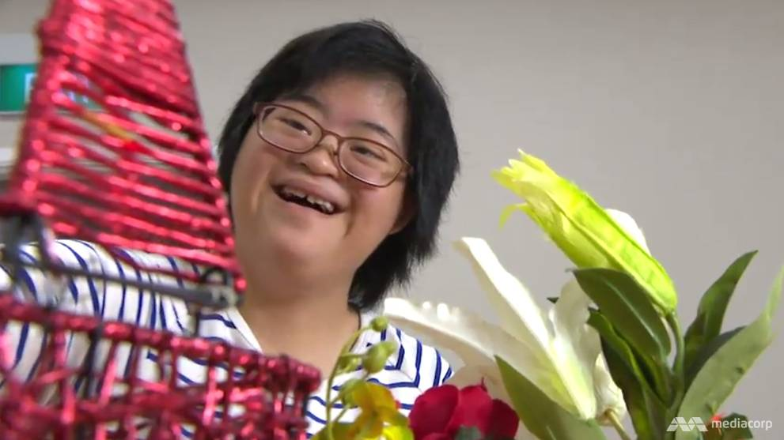
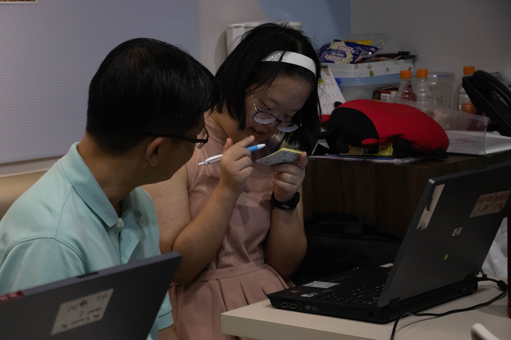
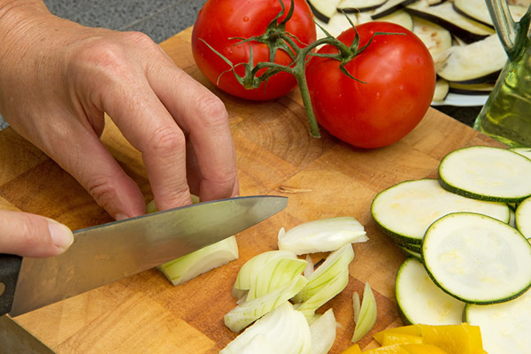

Drumming classes at DSA develop talent in percussion. Our experienced instructors, Shamroz Khan and Shivaranjini Moorthy from Shi Sha Production, make the learning engaging and fun.
While the lessons emphasise basic rhythms and use of hand techniques, speed, and endurance, there are deeper benefits such as memory enhancement, focal attention, discipline, motor planning and sequencing, following instructions, and teamwork.
DSA is proud of its Drum Prodigies Ensemble which has performed for many an audience, including Prime Minister Lee Hsien Loong.

CHILDREN PROGRAMMES
DSA(S)’s Children’s Education Services (CES) seek to promote services for children with Down syndrome from birth to the age of 18.
Infant Toddler Programme (ITP)
ITP is for infants and toddlers younger than 3 years old, who have Down syndrome. The programme is designed to: Enhance the development and learning of infants and toddlers through individualized, developmentally appropriate activities within the family’s and child’s everyday life experiences as well as provide an opportunity for parents and their young children to learn together.
Integration Facilitation Support Programme (IFSP)
IFSP provides additional support to children with Down syndrome who are attending primary schools and kindergartens. Since 2009, the Tripartite Collaborative Approach adopted by DSA(S) with educational institutions and parents have helped children with Down syndrome to thrive in the mainstream education. All our IFSP are MOE registered, and we encourage parents to engage in their child’s education by organising Meet-The-People sessions to enable them to provide support at home.
Educational Enhancement Programme (EEP)
EEP is a collaboration between DSA(S) and the Early Childhood Development Agency aimed at parents and mainstream educators. The workshops equips teachers with skills to integrate children with Down syndrome into their classroom, empowering parents to be active in their child’s development.
SIGN UP
ADULT PROGRAMMES
DSA(S)’s Adult Enrichment Programme (AEP) is an existing skills-enhancement programme for persons with Down syndrome and/or Intellectual Disability aged 18 years and above.
Employment
In line with our objective to enable people with Down Syndrome to be more independent, AEP may help suitable members to jobs where they can make use of the skills they have learnt. Two Training Officers/ Job Coaches visit our Learners at their job sites to provide support and guidance when required. Most of the Learners, who are working, come back to DSA(S) at least twice a week. During the time at AEP, the Training Officers will review job issues and their working relationships with colleagues at work.
Adult Enrichment Programme
The AEP is a one-stop transitional programme that provides a spectrum of services including:
- self-management of personal needs
- essential skills for daily living (e.g. money management, independent travel, etc.)
- securing and sustaining employment
- social inclusion
- talent development through art and craft
DSA(S) Thrift Shop
Those that go to the DSA(S) Thrift Shop will learn to organise, categorise, sort and tidy goods as well as foster teamwork and communication with other employees.
Outside Employment
Others may be posted to hospitality, food and beverage, horticulture, office administration, and factory jobs. Our partners include, Shangri-La Sentosa Hotel, ISG, Natrad Cheese Factory, Edible Garden City.
Community and Social Integration
We try to bring our participants on field trips to places such as exhibitions, farms, companies and supermarkets to put their practical skills into use as well as familiarise them with the real world.
AEP Camp
The 3 days and 2 nights camp conducted aims to stimulate independent living conditions for the learners, instilling a sense of independence and personal responsibility.
SIGN UP
FAMILY SUPPORT
Our programmes aim to help parents and families ease their anxieties about living with Down Syndrome by providing a better understanding of the common issues faced.
Parent Mentorship Programme
Parent mentors share personal experiences on the journey that they have gone through with their children with Down syndrome and provide guidance and support to new parents. Their role as friends and guides provides a support system that is unparalleled. Sharing their joys and sorrows, new parents will not feel alone in their journey. The group regularly connect with and learn from one another’s experiences.
Outreach Programmes
Our outreach programmes to external organisations aim to introduce and share our support and services with them to explore future collaboration and enhance close working relationships when we refer our clients to them for case management.
Talks and Workshops (EEP)
Imparts knowledge and life skills on healthcare, personal development, legal issues and parenting.
Deputyship
DSA(S) has helped parents and caregivers to apply for Deputyship, which allows them to manage their charges’ finances, personal and welfare on their behalf.
Family Enrichment and Bonding Activities
We conduct movie screenings, camps, workshops and celebrations that parents and caregivers are encouraged to attend to have fun alongside their charges!
SIGN UP
PSYCHOLOGICAL SERVICES
DSA(S)’s Adult Enrichment Programme (AEP) is a skills-enhancement programme for persons with Down syndrome and/or Intellectual Disability aged 18 and above.
Psychological Assessment
Psychological assessment utilises a variety of assessment battery and techniques to provide information about individual characteristics, behaviour, and capabilities. Members of DSA(S) will understand more about their strengths and capabilities, and gain a better understanding of underlying emotional, cognitive, and/or behavioural issues.
Therapeutic Services
They can also access access therapeutic services that serves to address a variety of emotional and behavioural concerns ranging from mood issues (e.g. anxiety, depression), stress and anger related issues, to social skills development. They are tailored to individual differences, strengths, and capabilities to ensure that individual needs and concerns are met.
The service will be offered to members of DSA(S) and their families from mid-June 2018. Referral processes and intake admissions procedures are ongoing.
SIGN UP
ENRICHMENT PROGRAMMES
DSA(S) provides a variety of enrichment programmes specially tailored to persons with Down syndrome, aiming to develop their talents and passion.
Peforming Arts
Drums and Percussion
| CLASS | DAY | TIME | VENUE | AGE GROUP |
|---|---|---|---|---|
| Drums & Percussion 1 | Wednesday | 7:00 PM - 8:00 PM | DSA Centre, Junction 8 | 13 yrs & Above |
| Drums & Percussion 2 | Friday | 7:00 PM - 8:00 PM | DSA Centre, Junction 8 | 13 yrs & Above |
| Drums & Percussion 3 (Junior) | Saturday | 11:00 PM - 12:00 PM | DSA Centre, Junction 8 | 13 yrs & Above |
| Drums & Percussion 3 (Senior) | Sunday | 10:00 PM - 11:00 AM | DSA Centre, Junction 8 | 13 yrs & Above |
*Note that the age group categorisation is only a guide and specific students will be grouped after evaluation by the instructors and discussion with parents.
SIGN UP

Creative and Fusion Dance
In our dance classes, participants learn the art of communication through body language through dance techniques and moves from both traditional and modern dance styles, while improving their gross and fine motor control, coordination and balance, visual-spatial reasoning, and teamwork. The classes are conducted by a team of experienced dance instructors from Apsara Asia lead by Shahrin Johry and Samantha Teo, and are among our most in-demand programmes.
Our dancers have performed in various events such as our gala fundraiser, Mystique; World Down Syndrome Day; and the Maya Dance Theatre production, Release 2.0, in which they were in a fully inclusive performance as artistes.
| CLASS | DAY | TIME | VENUE | AGE GROUP |
|---|---|---|---|---|
| Creative Dance (Basic) | Saturday | 1:00 PM - 2:30 PM | DSA Centre, Junction 8 | 12 - 18 years old |
| Fusion Dance (Advanced) | Saturday | 2:30 PM - 4:30 PM | DSA Centre, Junction 8 | 18 yrs & Above |
*Note that the age group categorisation is only a guide and specific students will be grouped after evaluation by the instructors and discussion with parents.
SIGN UP
Speech & Drama
In every child there is a need for expression and a desire to be known. Drama gives our clients the confidence to express themselves in a safe environment, while stimulating thinking, motor planning and sequencing, speech, language, and memory skills.
These sessions are conducted with great energy and enthusiasm by our drama instructors, Ms. Jean Ng and Mr. Julius Foo who are well known in Theatre circles. It has been 11 years since the start of this programme and it remains one of our most sought after classes.
| CLASS | DAY | TIME | VENUE | AGE GROUP |
|---|---|---|---|---|
| Speech & Drama 1 | Saturday | 2:30 PM - 4:00 PM | DSA Centre, Junction 8 | 6 - 12 years old |
| Speech & Drama 2 | Saturday | 4:30 PM - 6:00 PM | DSA Centre, Junction 8 | 13 - 18 years old |
| Speech & Drama 3 | Tuesday | 7:00 PM - 8:30 PM | DSA Centre, Junction 8 | 18 yrs & Above |
*Note that the age group categorisation is only a guide and specific students will be grouped after evaluation by the instructors and discussion with parents.
SIGN UP
The Visual Arts

Flower Arrangement
This floral design programme is run by professional florist Ms Felicia Toi of Precious Petals. The programme lets your children have fun learning to appreciate and handle different types of flowers, their textures, colours, and combinations in arranging a beautiful floral design.
While they will learn to arrange flowers for wall pieces, centrepieces, and hand bouquets, they will also learn to use creativity, fine motor skills, and cognition. Participants will also be learning many skills and techniques used by professional florists!
| CLASS | DAY | TIME | VENUE | AGE GROUP |
|---|---|---|---|---|
| Flower Arrangement | Tuesday | 4:30 PM - 6:30 PM | DSA Centre, Junction 8 | 13 yrs & Above |
SIGN UP
Visual Art
Our Visual Art enrichment classes are conducted by Ms. May Tang who brings a wealth of experience and passion to her lessons.
The classes cover, among other things, painting using a variety of paints such as watercolour and acrylic on mediums like paper, canvas, and cloth. In these classes, participants will get to explore self-expression, develop creativity, understand visual patterns, and work on fine motor skills and cognition.
| CLASS | DAY | TIME | VENUE | AGE GROUP |
|---|---|---|---|---|
| Visual Art | Tuesday | 3:30 PM - 5:00 PM | DSA Centre, Junction 8 | 10 - 18 years old |
SIGN UP
Sports

GIMSports: Gymnastics and Fitness
Young children with Down Syndrome will be taught specially designed, developmentally appropriate gym and fitness routines by a team of experienced, professional fitness instructors who have, on average, 20 years of experience, and have worked with persons with Down syndrome since 2012.
In addition to developing their gymnastic skills on various pieces of apparatus,the programme also seeks to improve their strength, flexibility, coordination and cardiovascular fitness levels. The programme adapts age old training principles to form a fun, addictive, safe, stress-busting workout!
| CLASS | DAY | TIME | VENUE | AGE GROUP |
|---|---|---|---|---|
| GIMSports 1 | Saturday | 4:15 PM - 5:15 PM | DSA Centre, Junction 8 | 4 - 9 years old |
| GIMSports 2 | Saturday | 7:00 PM - 8:00 PM | DSA Centre, Junction 8 | 10 yrs & Above |
SIGN UP
Bowling
Bowling is a popular sport amongst our members. Our skilled coaches, Mr. Tan Kim Joo, Mr. Daniel Chang, who conduct our classes at the Singapore Recreation Club, and Mr Richard Tan Sok Pin who conducts our classes at the Civil Service Club, Tessensohn Road, work on techniques of bowling and prepare participants for competitive events. Bowling contributes to balance, coordination, and motor skills; promotes good muscle tone; and as a team event, improves interpersonal social skills. Our members have participated at various tournaments such as the Special Olympics National Games Singapore (2013), hauling a total of 13 medals, including 3 gold medals.

| CLASS | DAY | TIME | VENUE | AGE GROUP |
|---|---|---|---|---|
| Bowling (SRC) | Saturday | 11:00 AM - 1:00 PM | Singapore Recreation Club | 16 yrs & Above |
| Bowling (Orchid Bowl @ Our Tampines Hub) | Sunday | 10:00 AM - 12:00 PM | Our Tampines Hub | 8 yrs & Above |
*Children under 13 must be accompanied by a caregiver. Caregivers are encouraged to accompany their children regardless of age.
SIGN UP

Aikido
DSA(S)’s Aikido programme is conducted by Mr Patrick Chan and Mr Shamus Chan. Participants go through the grading system that is specially designed for our Aikido Programme to motivate them into working hard at Aikido.
Two classes are conducted every Saturday, with the Junior class for members aged 4 to 11 years old and the Senior class for members aged 12 years old and above.
| CLASS | DAY | TIME | VENUE | AGE GROUP |
|---|---|---|---|---|
| Aikido (Juniors) | Saturday | 10:00 AM - 11:00 AM | DSA Centre, Junction 8 | 4 - 11 years old |
| Aikido (Seniors) | Saturday | 9:00 PM - 10:00 AM | DSA Centre, Junction 8 | 12 yrs & Above |
SIGN UP
Zumba
The Zumba programme is designed for members aged 10 years old and above, and is conducted every Saturday by Ms Pansy Lau, a registered fitness instructor with the Ministry of Education.
With the energetic music and exciting choreographies Ms Lau provides, DSA(S)’s Zumba programme has become one of the most highly sought-after programmes among our members.
DSA (S) Zumba program provides a full body workout for our members, touching on almost every muscle and joint. Zumba allows our members to perform cardio and practice muscle conditioning, balance and flexibility.
| CLASS | DAY | TIME | VENUE | AGE GROUP |
|---|---|---|---|---|
| Zumba | Saturday | 12:00 PM - 1:00 PM | DSA Centre, Junction 8 | 10 yrs & Above |
SIGN UP
Literacy and Numeracy

Computer Maths
Computer skills are a necessity in the 21st century and the interactive options that technology brings make learning easier and more engaging. DSA runs computer classes conducted by Mr Toh Wei Xiang, with a dedicated group of volunteers.
The objective is to demystify mathematics using a software solution that helps members improve their numeracy skills while enhancing their computer literacy in an interesting and interactive way.
| CLASS | DAY | TIME | VENUE | AGE GROUP |
|---|---|---|---|---|
| Computer Maths | Sunday | 11:00 AM - 12:30 PM | DSA Centre, Junction 8 | 14 yrs & Above |
SIGN UP
kidsREAD Class
Literacy is essential for all communication. KidsREAD is a programme supported by the NLB that encourages the habit of reading. The programme encompasses dynamic reading activities that keep participants engaged in the story they are working on to help develop reading skills, creativity and imagination, while working on pronunciation, verbalisation, and social communication. The programme is run by a group of volunteers led by Ms Lynda Walter on Saturdays and Ms Cynthia Sim on Sundays, and has a faithful following.

| CLASS | DAY | TIME | VENUE | AGE GROUP | FEES PER MONTH |
|---|---|---|---|---|---|
| kidsREAD 1 | Saturday | 3:00 PM - 4:00 PM | DSA Centre, Junction 8 | 14 - 25 years old | FOC |
| kidsREAD 2 | Saturday | 4:00 PM - 5:00 PM | DSA Centre, Junction 8 | 8 - 17 years old | FOC |
| kidsREAD 3 | Sunday | 11:00 AM - 12:00 PM | DSA Centre, Junction 8 | 16 - 26 years old | FOC |
SIGN UP
Food Preparation and Others

Yummy Tummy Food Preparation Programme
Participants in this programme will learn some basic recipes and understand personal hygiene and safety in the kitchen. They will experience a sense of independence as they prepare meals that they can then feel proud of eating and sharing with others. And participants will be able to try their hand at reproducing what they’ve learned at home!
This programme is run by DSA’s very own Siti Mariana Abdullah who leads the kitchen studio in our Adult Enhancement Programme (AEP) as well.
| CLASS | DAY | TIME | VENUE | AGE GROUP |
|---|---|---|---|---|
| Yummy Tummy Food Preparation Programme | Saturday | 9:00 AM - 11:00 AM | DSA Centre, Junction 8 | 10 yrs & Above |
SIGN UP